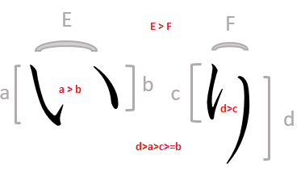
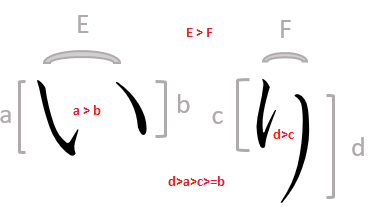
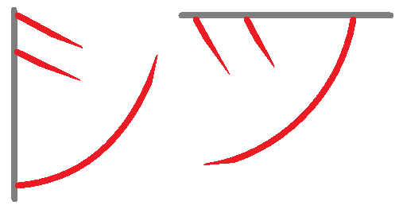

This week's lesson is going to focus on writing kana the right way. In Japan, students practice drawing kana on a 4-square grid. This is kind of like the way that English speakers use a three-line system to help students properly draw their letters. In the picture below you can see two kana that look a little similar, but the 4-square grid helps us to see some distinct differences between them.
 

These are the two characters for 0i and ri that we saw above. You can see that they are similar. In fact, it is easy for someone to draw them badly enough to be confused just like an h can be drawn badly enough to look like an n. Similar, but not the same. 0I should be drawn as two lines of roughly the same size, parallel to each other and tilted slightly from quadrant 2 to quadrant 4. RI should be drawn as two lines, one curved inward and much longer than the one on the left, from top to bottom. These are very different characters even if they have similar pieces. Note also that the ri in hirgana and katakana re also very similar with more prounounced straight and curved elements in the katakana.
You have already seen tsu, but now we are adding shi. These two characters are also very similar so it is helpful to consider that each character is associated with one wall of the grid. SHI starts on the left wall. In the hirgana shi, the J shape goes along that wall and exits into the first quadrant. In the katakana shi, all three strokes begin on the left wall and move toward the right. TSU that we saw earlier starts on the top wall. Again, the J shape moves along that wall and exits into the third quadrant and all three strokes of the katakana tsu start from the top wall. In the hiragana, it may be easier to see the difference, but the orientation of the katakana strokes shows that shi is wider north-to-south and narrower west-to-east, while tsu reverses that.
The last pair of of kana are also very similar to each other, but as with shi and tsu, n0 and so are tied to the left and top walls. The orientation of the strokes is different, even if the elements themselves are similar. In the hand-written caligraphy below you can see that the starting point of each stroke is very different.
One fun fact about n0. That is n0 ん, not no の. The n0 has no vowel just like the 0a has no consonant. It never begins a word, but it can be used to terminate a set of sounds. See the example below where ん/ン is used to terminate hu0usen0 (balloon).
This is quite a list of kana to learn. Once you complete this you will know 14 of the most common katakana and hirgana syllables. Practice them fifty times each day ensuring that you have the right angles. Japanese children practice in three rows.